Where ancient flame meets modern brilliance. A nation at the crossroads of Europe and Asia.
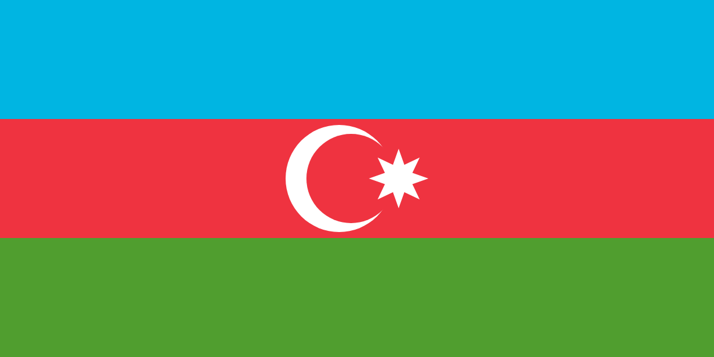
Flag of the Republic of Azerbaijan
Azerbaijan sits at a breathtaking crossroads where the Greater Caucasus Mountains meet the Caspian Sea, and where East meets West. The name itself means "Protector of Fire," a title earned over millennia of natural flames, cultural brilliance, and fierce independence.
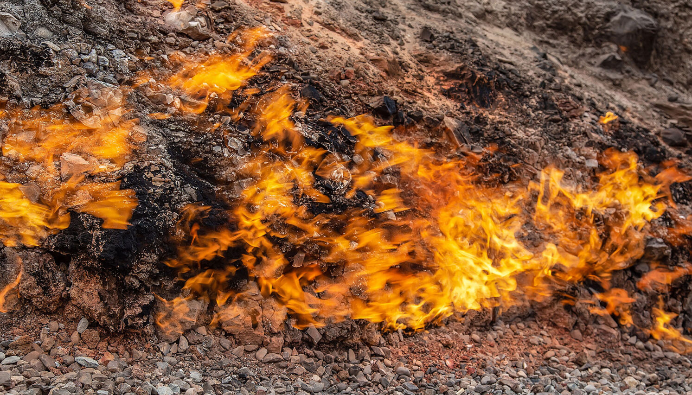
Azerbaijan is often called the Land of Fire and there are several reasons why. The word ‘Azerbaijan’ literally means ‘protector of fire’; the country is abundant in oil and natural gas; it was a centre of fire worshipping; and fire has always been one of the symbols of our capital, Baku, which today is reflected in the amazing Flame Towers.
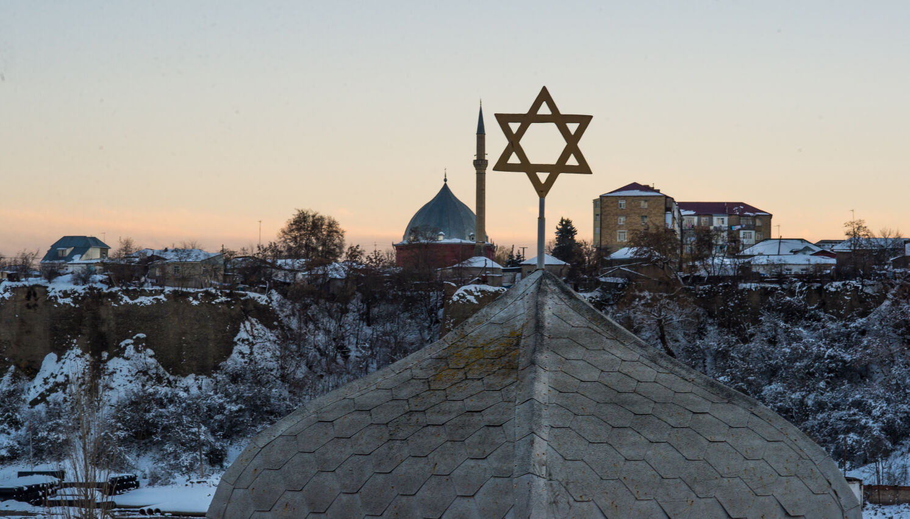
Once situated along the Great Silk Road, many people have passed through these lands, helping to shape the nation’s unique traditions of tolerance and hospitality. Today, Azerbaijan is a secular country where Sunni and Shia Muslims, Christians, Jews and many other small nations have been living in peace for centuries.
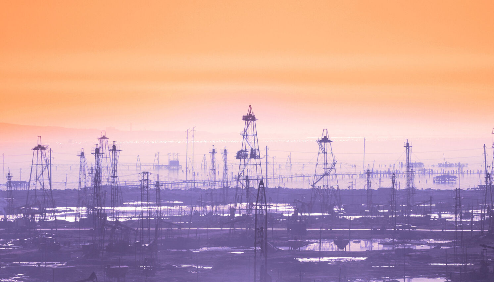
In 1901, Azerbaijani oilfields supplied over half of the entire world's oil. The world's first industrial oil well was drilled near Baku in 1848, decades before the famous Pennsylvania strikes.
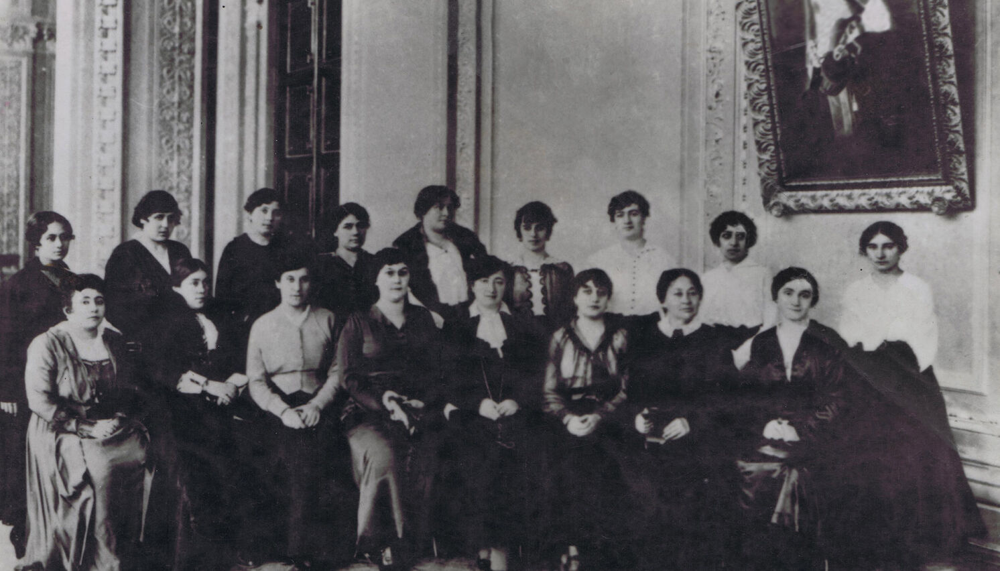
In 1918, the Azerbaijan Democratic Republic became the first secular democracy in the Muslim world, granting women the right to vote, two years before the United States and a decade before Great Britain.
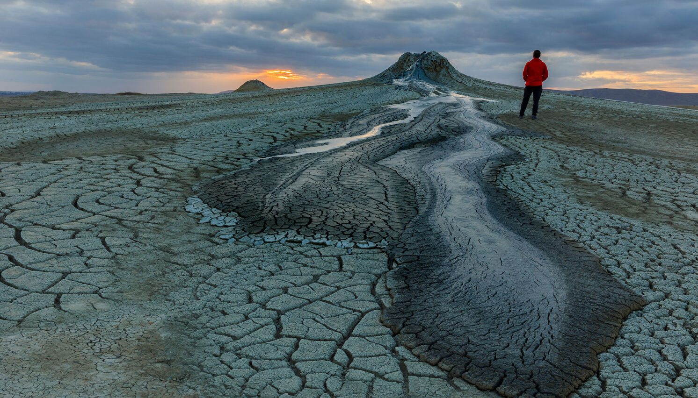
Azerbaijan has around 350 mud volcanoes, more than any other country on earth. The Gobustan region's volcanic landscape is over 20 million years old and part of a UNESCO World Heritage Site.
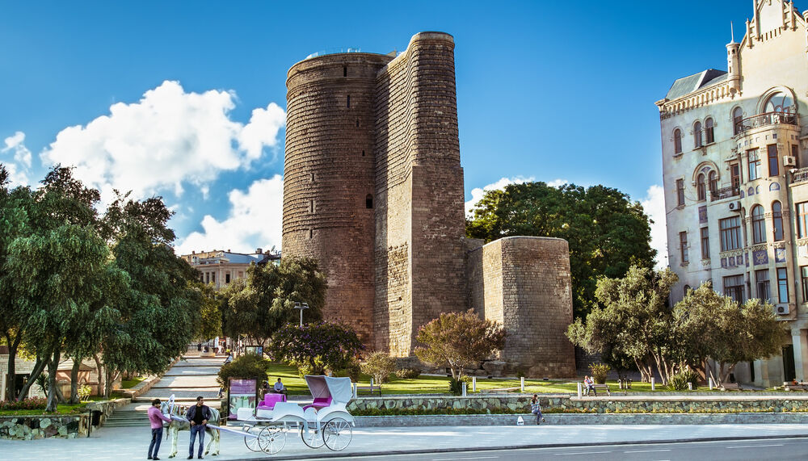
Baku's Icherisheher (Inner City), enclosed by 12th-century walls, is a UNESCO World Heritage Site. The iconic Maiden Tower and Shirvanshahs' Palace stand as testament to Azerbaijan's medieval grandeur.
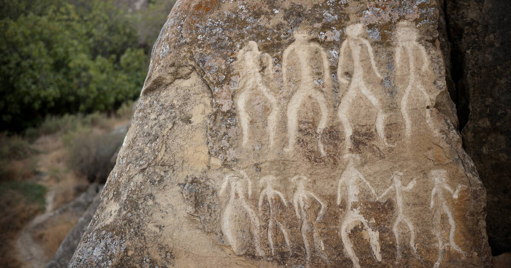
Gobustan is home to over 6,000 rock engravings dating back more than 40,000 years, one of the richest collections of prehistoric rock art in the world, recognised as a UNESCO Heritage Landscape.
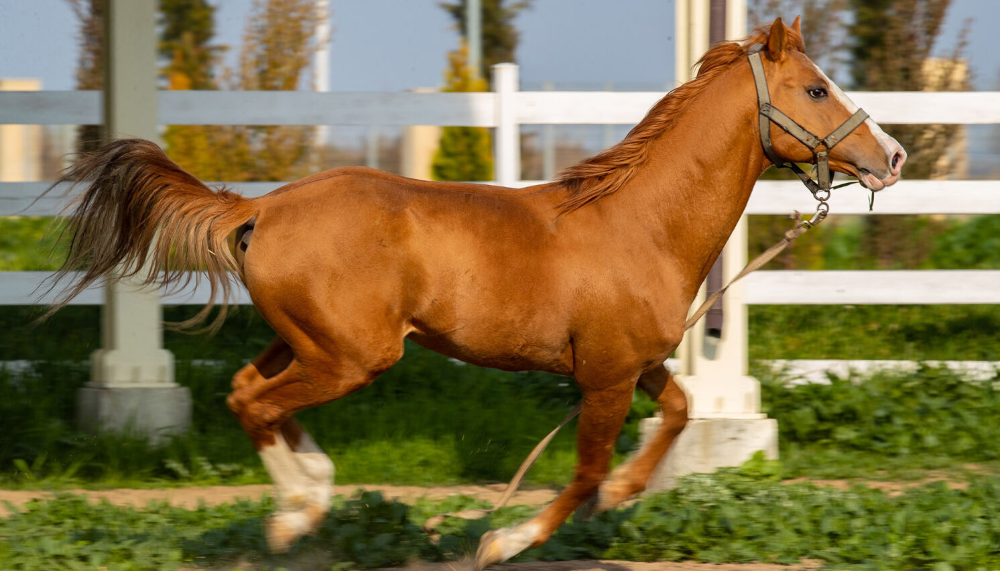
The beautiful Karabakh horse, native to Azerbaijan and a symbol of the country, is prized for its speed, stamina and beautiful chestnut colour. Traditionally bred in the Karabakh region, numbers have declined but breeding continues in western parts of the country. In 1956 a Karabakh horse was even gifted to British Queen Elizabeth II.
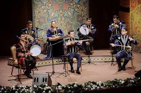
Azerbaijan's classical tradition, Mugham, is UNESCO Intangible Heritage, a deeply expressive improvisational form blending poetry, ancient Persian modes, and virtuoso performance on the tar and kamancha.
Guests are sacred in Azerbaijani culture. You will never leave an Azerbaijani home without tea, sweets, and a warm welcome.
The ancient spring festival (March 20-21) features bonfires, traditional sweets, wheat sprouts, and coloured eggs for good fortune.
Azerbaijani carpet weaving is UNESCO Intangible Heritage. Each region has its own patterns and every carpet tells a story.
Centuries-old recipes prepared with love for every celebration, guest, and gathering. Come taste these traditional delicacies at our booth today.
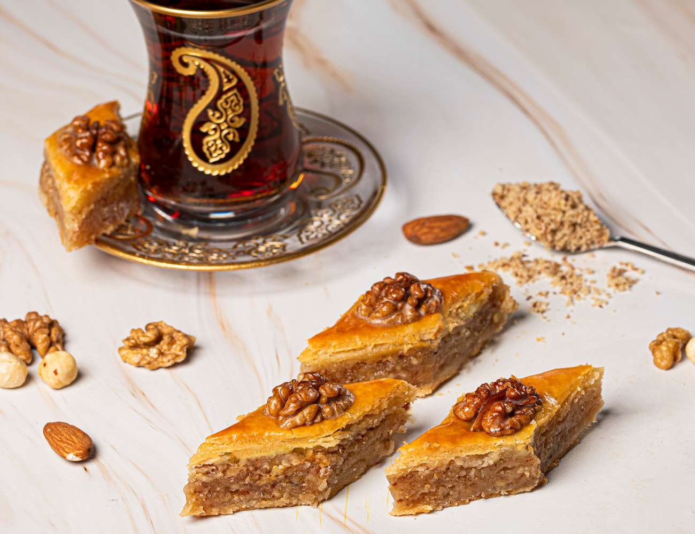
Diamond-shaped layers of crispy pastry filled with crushed walnuts or hazelnuts, steeped in honey or fragrant sugar syrup, and kissed with saffron. The crown jewel of Azerbaijani sweets and a staple of every Novruz table.
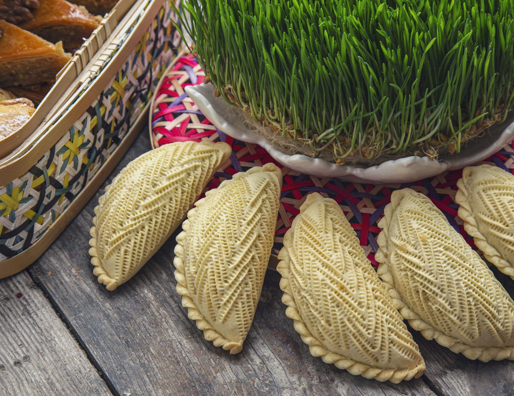
A crescent-moon shaped pastry with a delicate shell decorated with intricate pinched patterns. Inside lies a fragrant filling of ground almonds, hazelnuts, and cardamom-spiced sugar. Symbolises the crescent moon on Azerbaijan's flag.
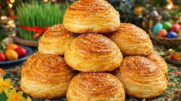
A golden spiral-shaped pastry with a savoury filling of seasoned cottage cheese or salty curd (sor), enriched with butter and spices. Beautifully flaky on the outside, creamy and aromatic within. A beloved snack at any Azerbaijani tea table.
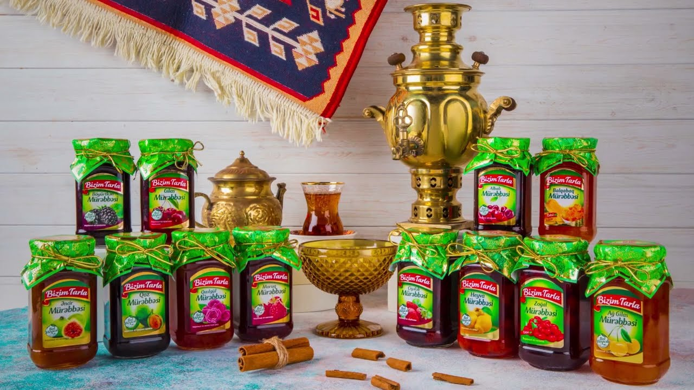
Whole strawberries (one of the varieties) slowly cooked in fragrant sugar syrup until they glisten like jewels. Served alongside hot tea as a spoonful of sweetness, held on the tongue while sipping. A ritual of pure Azerbaijani hospitality.
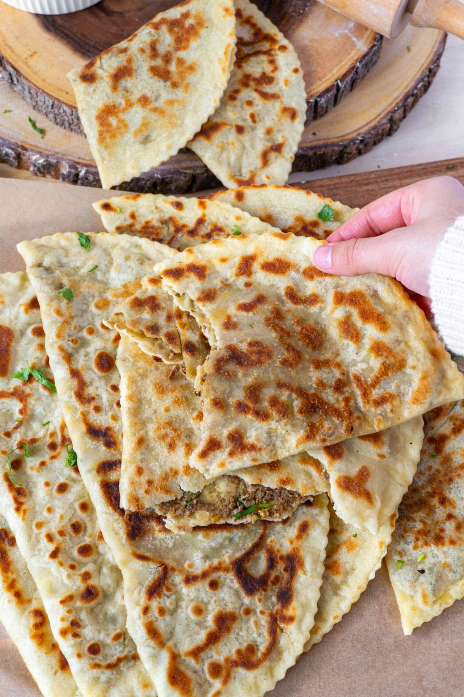
Thin, crispy half-moon flatbreads cooked on a convex iron griddle called a saj. Filled with fragrant fresh herbs (goy: spinach, coriander, dill, nettles) or spiced ground lamb (et). Finished with a squeeze of pomegranate juice and sumac.
From flame-lit mountaintops to Silk Road citadels, Azerbaijan rewards the curious traveller at every turn.
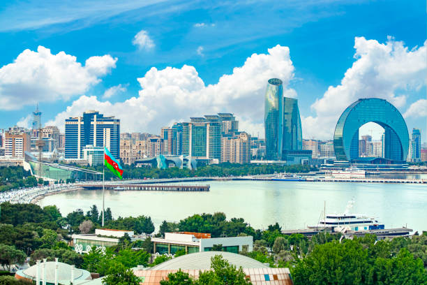
A dazzling capital where medieval walls meet the Flame Towers. Explore the UNESCO Old City, vibrant Nizami Street, and the Carpet Museum shaped like a rolled carpet.
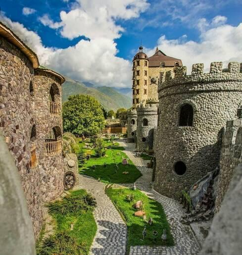
Multicultural Gakh in north-west Azerbaijan is scattered with the relics of ancient churches and towers. Definitely visit the quaint village of Ilisu which was once its very own tiny sultanate, and from there you can hike to photogenic ramparts, amazing viewpoints and spectacular waterfalls.
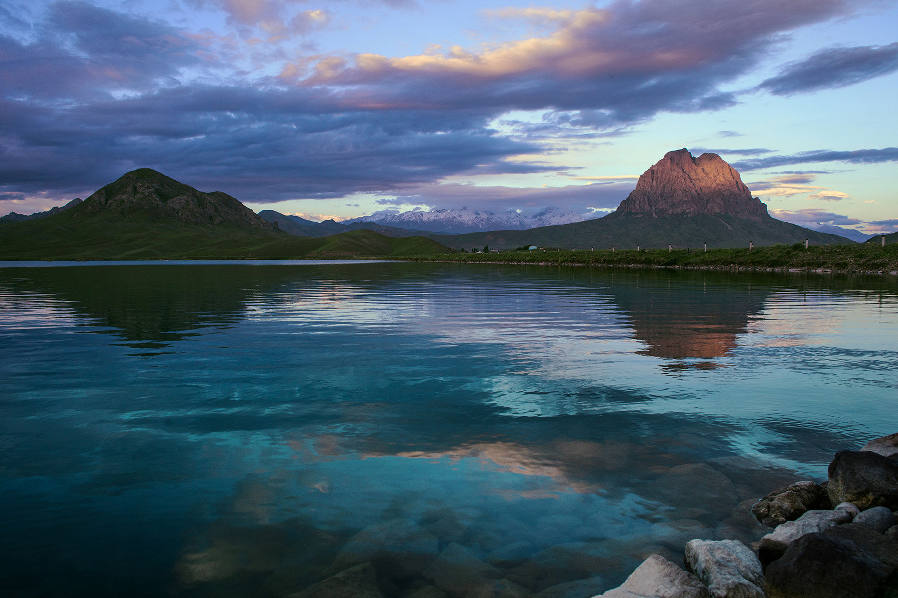
One of the most iconic natural sights is hidden in the Shahbuz region at 2,500 metres above sea level where an enchanting floating peat island drifts mysteriously across picturesque Lake Batabat.
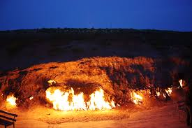
The "Burning Mountain," a hillside that has been naturally ablaze for centuries. Ancient fire-worshippers once traveled here to witness this geological miracle.